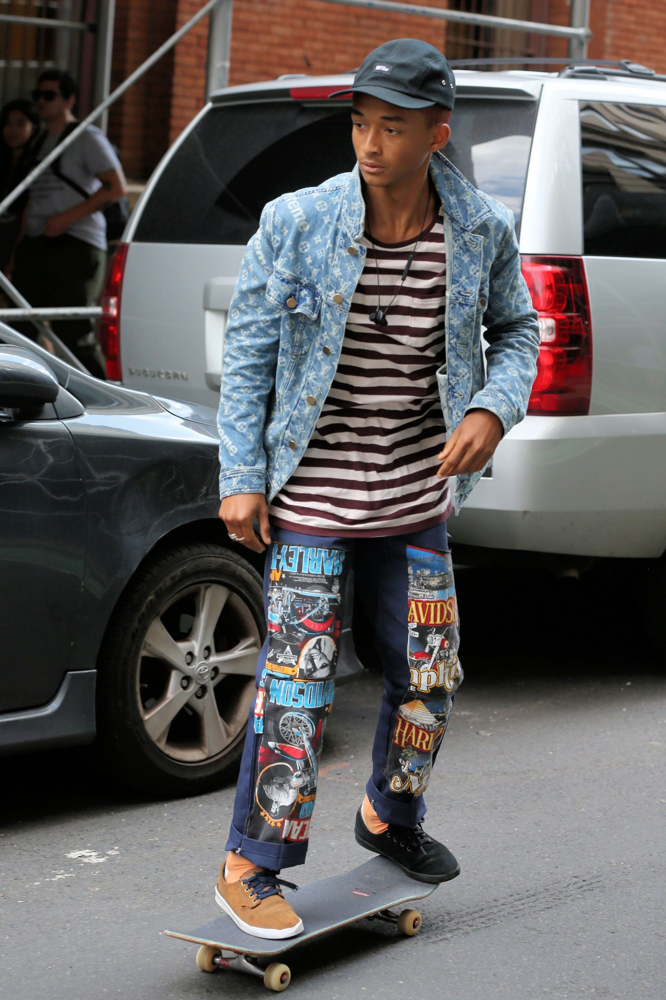

O co chodzi?
Streetwear to inspiracje
przestrzenią uliczną, łączące wygodę,
kalifornijski luz, chwytliwe i
prowokujące nadruki oraz oryginalne
projekty graficzne na ubraniach. W
Polsce często swoje korzenie ma w street
arcie, skateboardingu, czy w subkulturze rowerowej.
POPULARNOŚĆ STREETWEARU
Nie ma konkretnego wydarzenia historycznego, które oznaczałoby narodziny
streetwearu. W rzeczywistości nikt tak naprawdę nie wie, kiedy zaczęto określa
modę uliczną mianem streetwearu. Jedno jest jednak pewne – streetwear podbija
świat (i pewnie tak pozostanie w przewidywanej przyszłości). Pomyśl o tym, iż
wszyscy Twoi ulubieni aktorzy, raperzy, piosenkarze, czy inne osoby medialne
pomysłu na swoje stylizacje czerpią głównie z mody ulicznej – to sprawia, że sam
chcesz przerabiać swoją garderobę dokładając do niej coraz to nowszych
„artefaktów” z mody streetwearowej. Jest wiele rzeczy, które idą w kierunku
budowy marki streetwear, szczególnie takiej, która ma przyciągać jak magnes i
dobrze się sprzedawać. W ciągu ostatnich 30 lat streetwear był reprezentowany w
wielu różnych światłach. Każda mijająca dekada przynosiła zupełnie nowy styl,
którego syntezę obserwujemy dziś. Wkroczmy głębiej w historię streetwearu,
ponieważ przyjrzymy się niektórym z najbardziej wpływowych nazw i stylów,
które kiedykolwiek uderzyły w nasze społeczeństwo.

Shawn Stussy był zwyczajnym surferem w latach
80-tych, czyli w czasach, w których na topie były
dzwony, szalone wzory, hippisi, punki, ulicznicy…
lata przełomowe, kiedy młodzież zaczęła swój
młodzieńczy bunt o wolność. Streetwear zawsze
będzie miał młodzieńczy wydźwięk, ponieważ to
właśnie młodzi ludzie decydują o tym co będzie na
topie. Shawn Stussy był pierwszą osobą, która
zaczęła tworzyć koszulki streetwearowe. Zrobił to,
drukując swoje logo na koszulkach. Miał jeden cel-
dorobić dodatkowe pieniądze, gdyż sprzedaż ręcznie
robionych desek surfingowych nie była dla niego
wystarczająca. Tak oto, sprzedając koszulki na tyłach
swojego samochodu zbudował fajną i innowacyjną
markę (jeśli chodzi o streetwear) i w taki sposób dał
pierwsze tchnienie obecnemu streetwearowi.